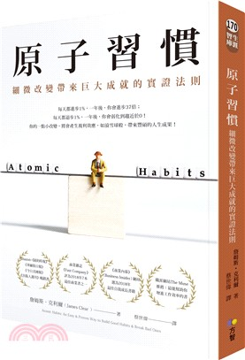
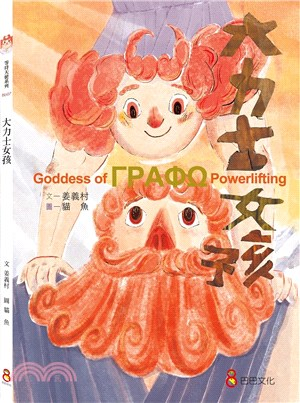
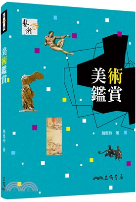

|  |
你可以在這本書中學到的10件事：
|
|  | 希臘神話故事改編 以帕運健力金牌選手林資惠的生命故事為藍本， 投射在古希臘女大力士戈拉芙的身上， 她們同樣擁有與你我不一樣的身體， 同樣歷經艱辛訓練、克服困難， 也同樣藉由「健力」找到目標、開心做自己！ |
|  | 美術作品是歷來的藝術家們心血的結晶，可以充分反映各個時代的思想、感情及價值觀。因此，欣賞美術作品是人生中最愉悅而動人的經驗之一。本書期望能藉著深入淺出的文字說明及豐富多元的圖片介紹，從史前藝術到現代藝術、從純粹美術到應用美術、從民俗藝術到科技藝術，逐漸帶領讀者進入藝術的殿堂，暢享藝術的盛宴。 |